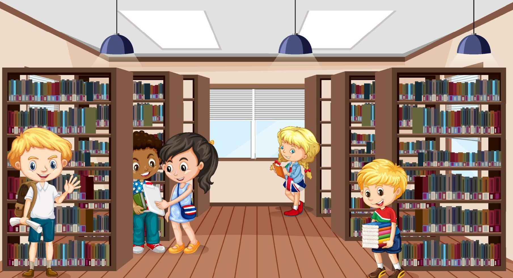
Na biblioteca da escola, você encontrou um livro misterioso sobre uma cidade perdida. O texto aponta dois locais para começar a expedição:
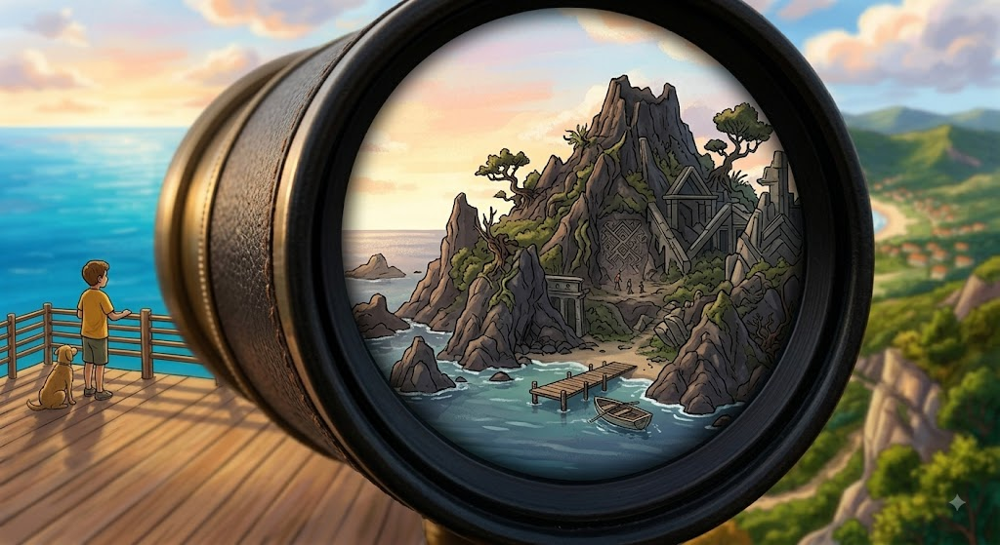
No Rio de Janeiro, a pista aponta para uma montanha coberta pela mata nativa. Como você pretende subir?
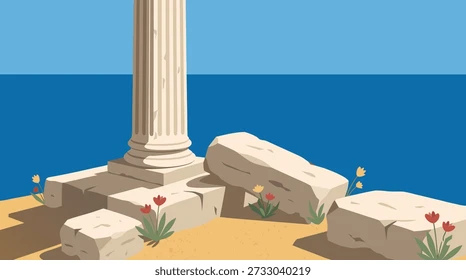
Em Pernambuco, o livro leva a ruínas de um antigo forte à beira-mar. Há duas entradas possíveis:

A trilha o leva até um mirante secreto. Na rocha, há um antigo portal de pedra e inscrições gravadas:
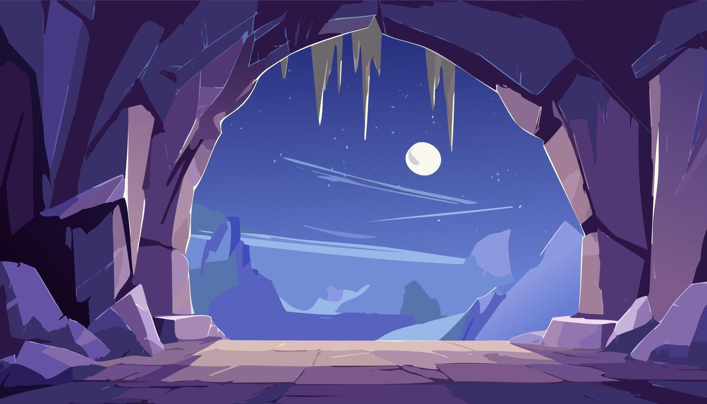
A caverna fica escura e o caminho direto está bloqueado por pedras. No entanto, há um pequeno feixe de luz ao fundo.
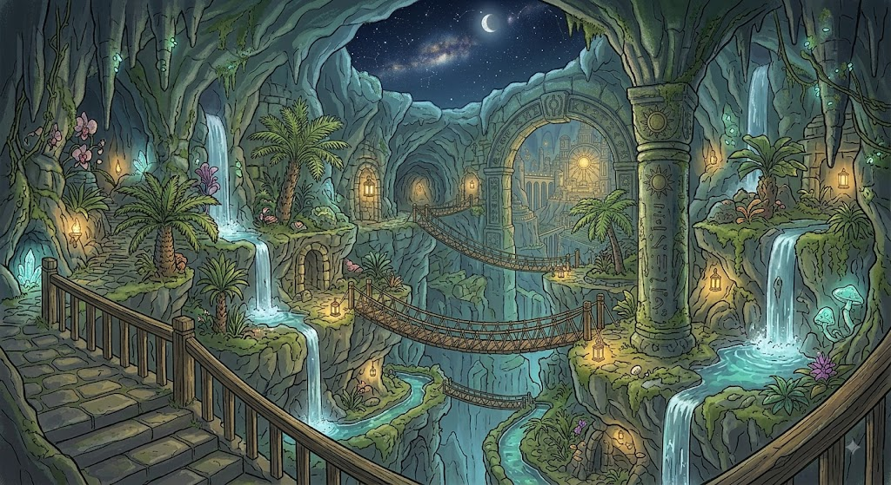
O túnel subterrâneo leva a uma bifurcação iluminada por cristais reluzentes no teto:
Na biblioteca da escola, você encontrou um livro misterioso sobre uma cidade perdida. O texto aponta dois locais para começar a expedição:
No Rio de Janeiro, a pista aponta para uma montanha coberta pela mata nativa. Como você pretende subir?
Em Pernambuco, o livro leva a ruínas de um antigo forte à beira-mar. Há duas entradas possíveis:
A trilha o leva até um mirante secreto. Na rocha, há um antigo portal de pedra e inscrições gravadas:
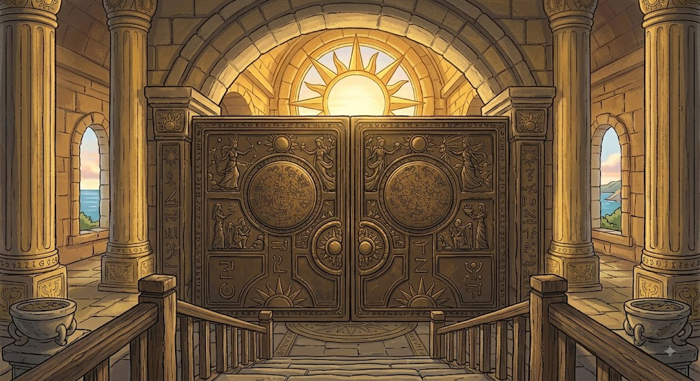
Ao atravessar o portal, você se depara com uma ravina profunda. Há uma ponte suspensa e um canal de água abaixo.
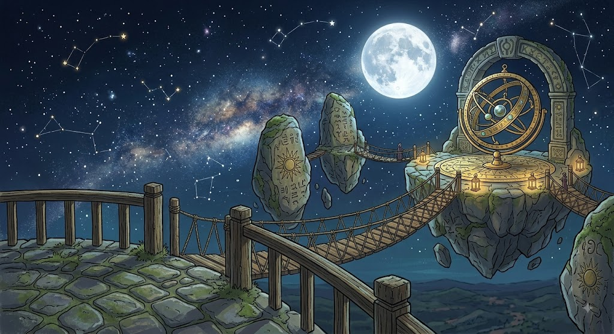
O mapa esculpido mostra que a cidade perdida é guiada pelas constelações ou por uma bússola mágica.
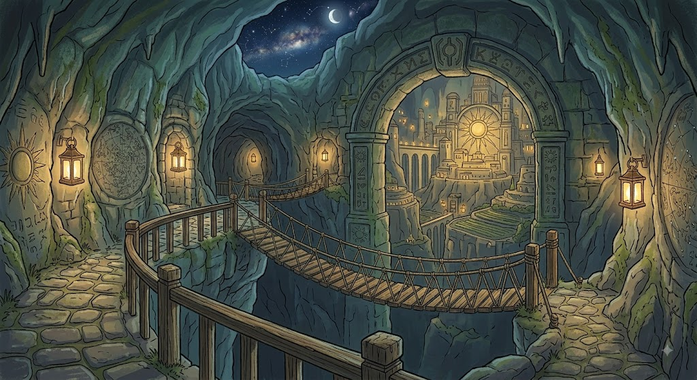
Você consegue empurrar as pedras e descobre uma alavanca de pedra oculta na parede da caverna.
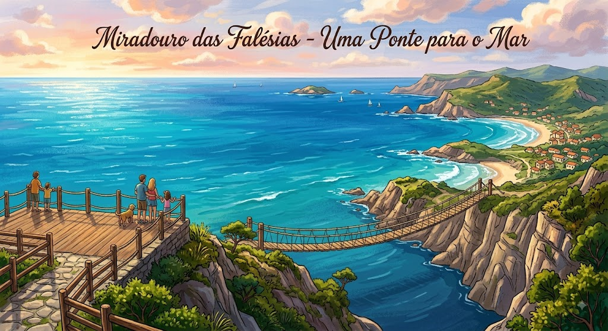
No Templo do Sol, há um enigma escrito na parede: "O que brilha sem nunca se apagar?".
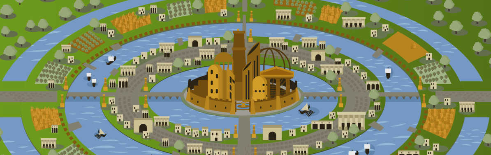
No Templo da Lua, espelhos refletem a luz para um pedestal no centro da sala.
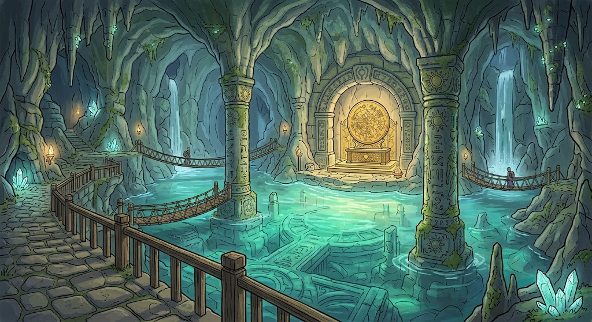
Pela luneta, você vê uma ilha secreta que não consta em nenhum mapa tradicional!
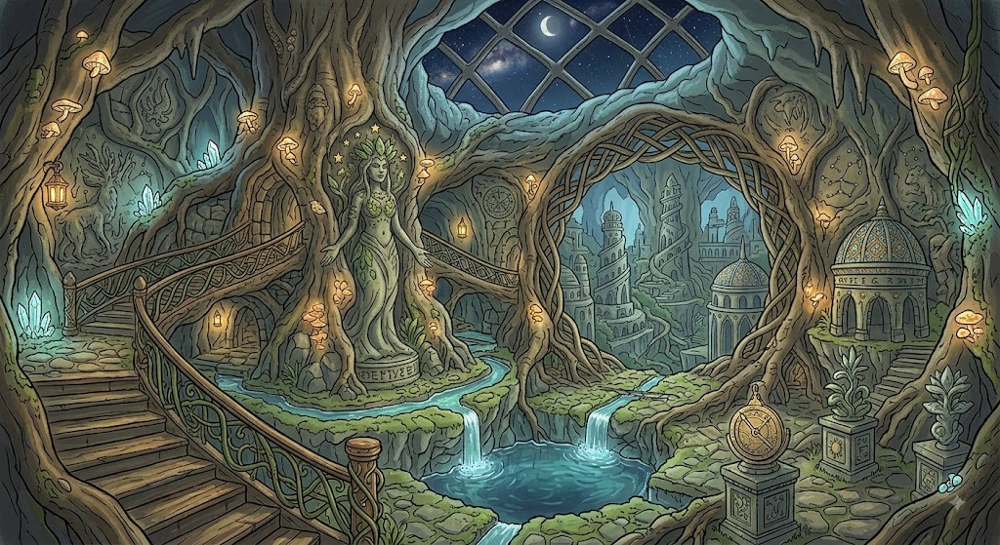
A ponte rangeu, mas você cruzou com segurança e chegou às portas gigantes de bronze do Salão Principal!
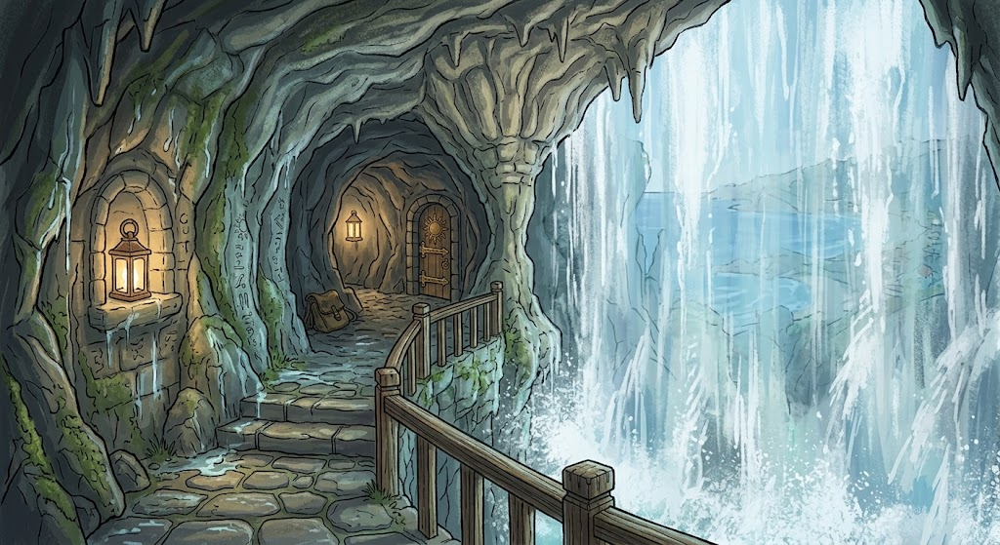
O canal o leva suavemente até um lago mágico dentro do salão central da cidade perdida!
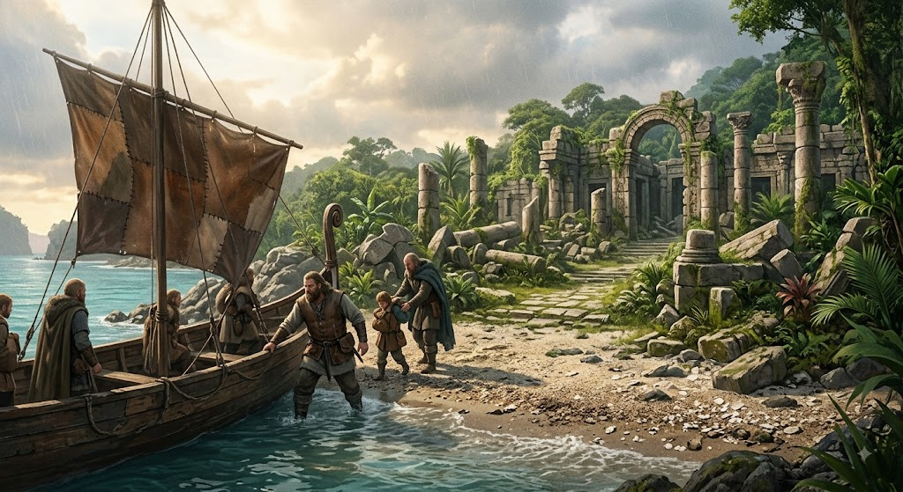
A bússola aponta para uma passagem secreta atrás de uma cachoeira monumental!
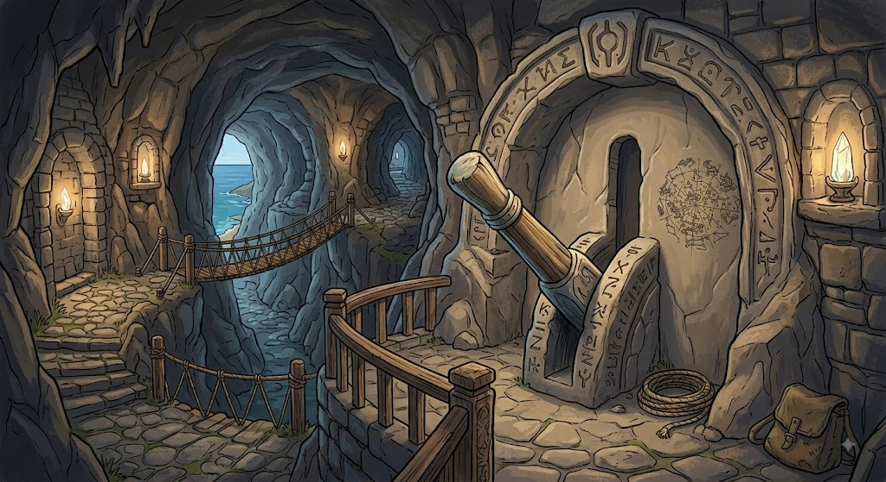
As estrelas indicam um caminho de pedras flutuantes sobre o vale. Com cuidado, você chega ao centro da cidade!
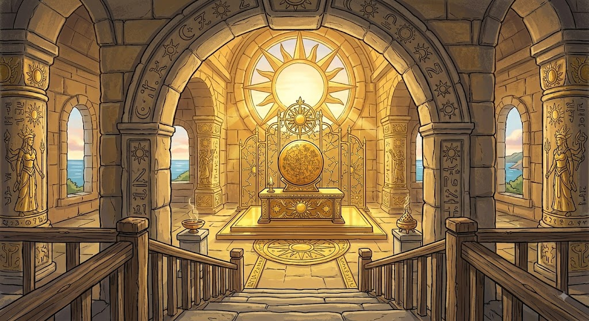
A alavanca faz a parede da caverna deslizar, revelando um túnel direto para o Coração da Cidade Perdida!
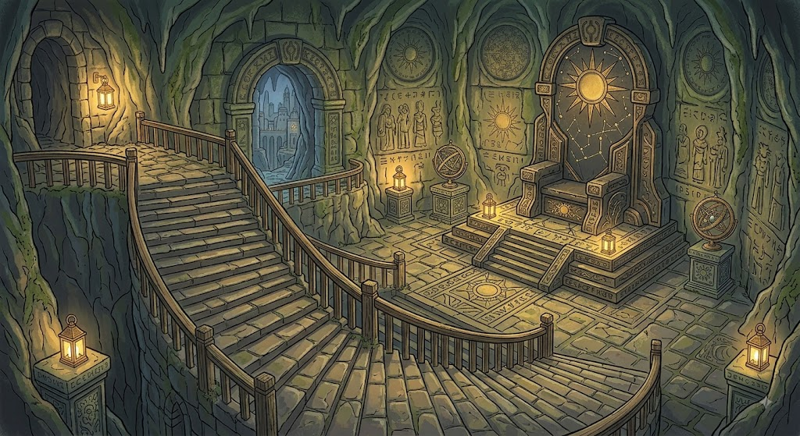
A parede se abre! Sua sabedoria revelou o cofre ancestral com a riqueza e os livros da cidade.
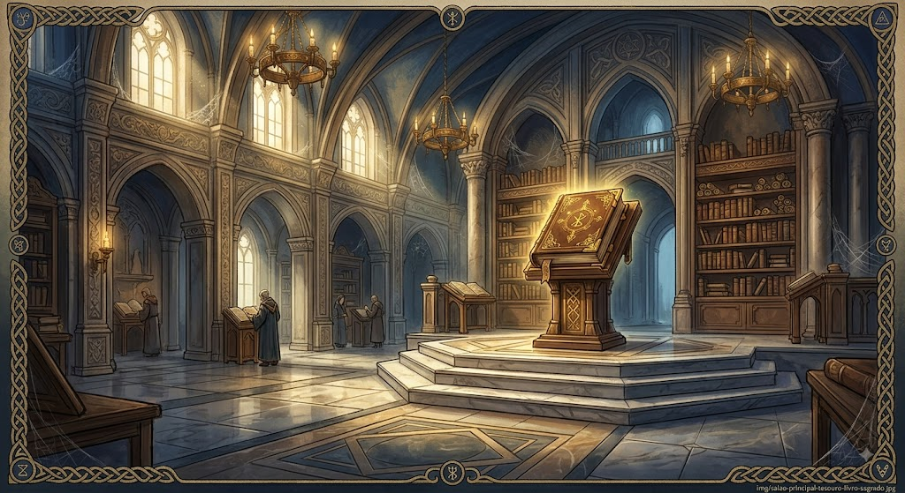
Ao pegar o amuleto, uma passagem secreta no chão do altar se abre para a Sala do Trono!
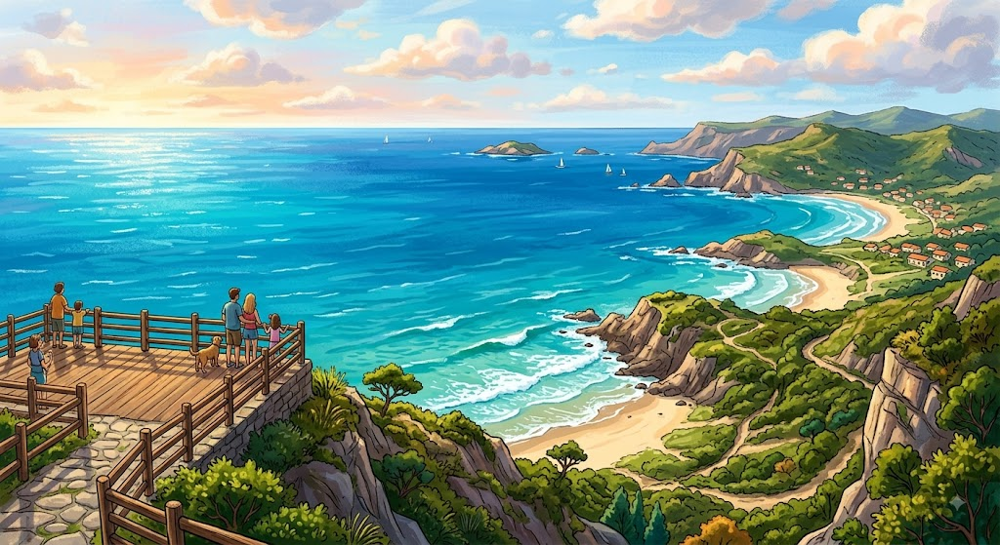
A luz refletida aciona um mecanismo antiquíssimo, abrindo os portões do Jardim Suspenso!
.jpeg)
O cristal ilumina todo o templo e revela o caminho para o santuário da Atlântida Nordestina!
.jpeg)
Você rema até a ilha secreta e desembarca direto na entrada principal de uma civilização esquecida!
.jpeg)
Você finalmente chegou ao centro da Cidade Perdida! Diante de você está o Grande Livro dos Segredos e o Tesouro Ancestral.
.jpeg)
Parabéns, explorador! Suas escolhas o levaram a decifrar um dos maiores mistérios do mundo e entrar para a história!